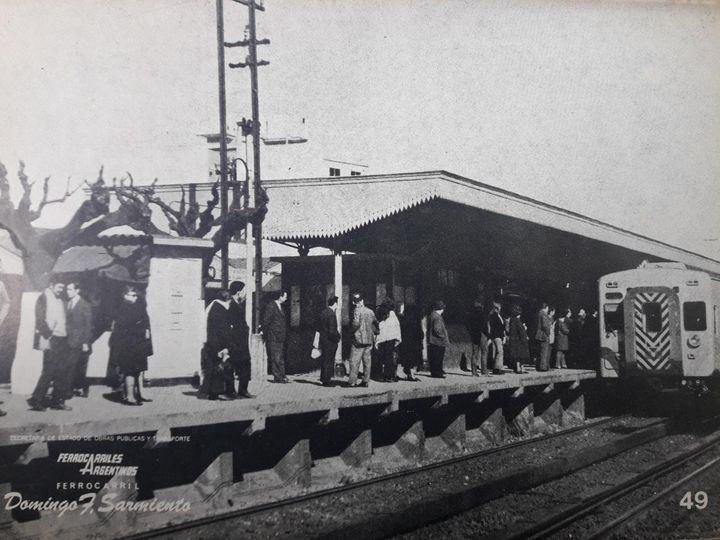

Estación Haedo
Un punto clave del Tren Sarmiento y nodo de conexión con otras líneas ferroviarias y colectivos.
La estación Haedo se encuentra en el partido de Morón, provincia de Buenos Aires. Es una de las más importantes del ramal Sarmiento, por su ubicación estratégica y por ser un centro de transbordo hacia otras líneas ferroviarias.
Información rápida
- Ubicación: Haedo, partido de Morón.
- Inauguración: 1886.
- Conexiones: Línea Sarmiento, Línea San Martín, Línea Roca (a través de ramales), colectivos urbanos.
- Servicios: boleterías, SUBE, baños, locales comerciales.
Historia de la estación

La estación Haedo, inaugurada en 1886, es uno de los nodos ferroviarios más importantes del oeste del Gran Buenos Aires, destacándose por su rol histórico como centro de transbordo y por haber impulsado el crecimiento urbano de la localidad homónima. Su fundación marcó un antes y un después en Morón, y hoy sigue siendo clave en la red del Ferrocarril Sarmiento y en las conexiones con otras líneas.
FUNDACIÓN (1886): La estación fue inaugurada el 1 de agosto de 1886 como parte del ramal del Ferrocarril Oeste hacia La Plata. El primer viaje partió desde La Plata y llegó a Haedo a las 07:10, en una zona entonces rural y despoblada. Inicialmente solo contaba con una casilla de madera para el personal, ubicada a unos 200 metros de la actual estación.
NOMBRE: Se bautizó en honor a Mariano Francisco Haedo, empresario y político que presidió la Comisión Directiva del Ferrocarril Oeste. Por un error tipográfico en los primeros horarios, se popularizó como “Mariano J. Haedo”, denominación que se mantuvo por más de un siglo.
PRIMEROS AÑOS: La llegada del tren impulsó la venta de lotes y el crecimiento de la localidad. En 1886 se vendieron los primeros 150 terrenos alrededor de los andenes, lo que dio origen al núcleo urbano de Haedo.
EXPANCIÓN Y TALLERES: Con la apertura de los talleres ferroviarios, la población aumentó y la estación se consolidó como centro ferroviario. En 1890 la parada fue transferida a la empresa británica The Great Western Railway, que amplió las instalaciones.
REMODELACIÓN (1920–1922): La electrificación del servicio urbano obligó a una remodelación integral. Se construyeron los cinco andenes que aún existen, adaptados a los nuevos coches eléctricos. Desde entonces Haedo se convirtió en un punto de conexión de los ramales Once–Moreno, Haedo–Temperley y Haedo–Caseros.
CONEXIONES MULTIPLES: Actualmente, Haedo es una estación intermedia de la Línea Sarmiento y también conecta con la Línea San Martín y la Línea Roca, además de ser parada de servicios de larga distancia hacia Bragado y Pehuajó.
IMPACTO URBANO Y CULTURAL: La estación fue motor del desarrollo de Haedo y del partido de Morón, atrayendo comercios, viviendas y servicios. Su arquitectura, con andenes abiertos y arboledas, conserva parte del espíritu original. Hoy, además de su función ferroviaria, la localidad cuenta con espacios culturales como el Museo Ferroviario Haedo y el Centro Cultural Raúl Scalabrini Ortiz, que mantienen viva la memoria ferroviaria.